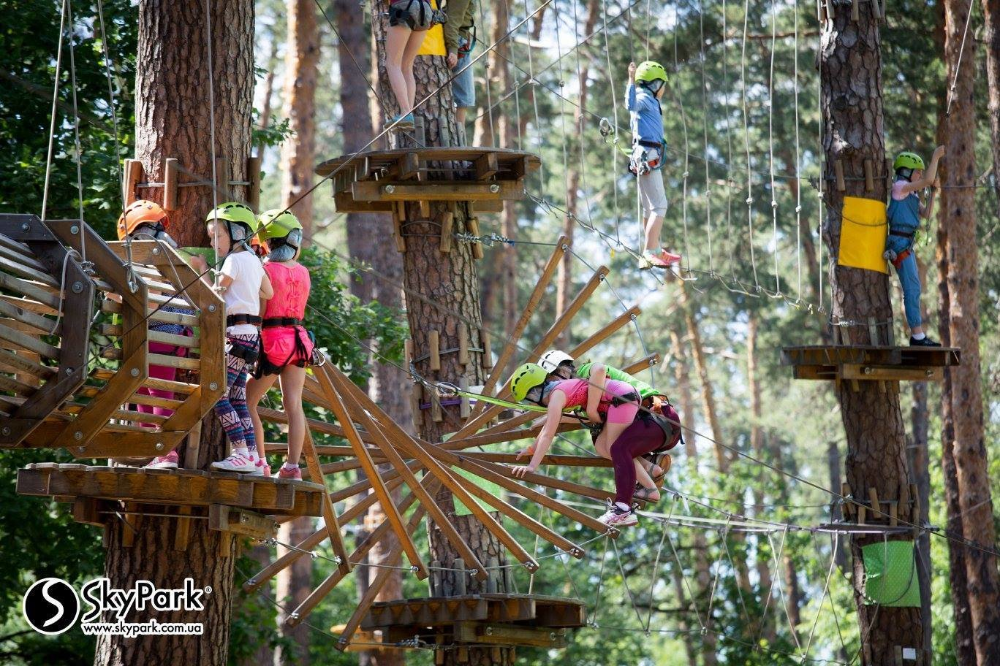

Sky Park
Sky Park
пн-нд, 10-20
Sky Park
е на неї, але перше ніж ти мене поховаєш, хотів би я побачити свою невістку, а твою дружину. Оженися, сину мій. А королевич і одказує: — Радий би я вволити вашу волю, тату, та не маю молодої, нема в мене дівчини. Вийняв тоді старий король золотий ключ з кишені й подав синові: — Іди на вежу, на найвищий поверх, роздивися там, а тоді мені скажеш, яку ти собі вподобав. Королевич не барився й пішов. Зроду ще не був він нагорі і ніколи й не чув, що там таке. От вийшов він на найвищий поверх, аж бачить у стелі залізні дверцята,— так, мов ляда,— але замкнені: ві¬дімкнув їх королевич золотим ключем, підняв і ступив нагору. Дивиться — аж там велика кругла зала — стеля в ній синя, як небо ясної ночі, а на стелі мерехтять срібні зірки; підлога вкрита зеленим м'яким шовковим килимом, а в стіні дванадцятеро високих вікон у золо¬тих рамах, і у вікнах на кришталевому склі райдужни¬ми барвами намальовані дівчата з королівськими коро¬нами на головах, у кожному вікні інша і в іншому убранні, але одна краща за другу, що аж королевич не міг очей від них одвести. Довго дивився він на них, не знаючи, якій віддати перевагу, коли це ті дівчата заворушились, як живі, і так на нього дивляться та усміхаються, тільки що не говорять. Аж тут помітив королевич, що одне з тих дванад¬цятьох вікон запнуте білою завісою. Відхилив він ту завісу, дивиться, а там дівчина в білому вбранні, під¬перезана срібним поясом, з перловою короною на голо¬ві, найкраща з усіх, тільки смутна та бліда, неначе з домовини встала. Довго стояв королевич перед тією постаттю, мов перед образом, і що довше дивився, то дужче мліло йому серце, а далі й каже: — Оця буде моя й ніяка інша!—І тільки це промовив, дівчина схилила голову, зашарілась, як ружа, і одразу усі ті портрети щезли. А як зійшов королевич униз і сказав батькові, що бачив і яку дівчину собі обрав, старий король засму¬тився, подумав та й каже: — Недобре ти вчинив, мій сину, відкривши те, що було запнуто, велику небезпеку на себе накликав своїм словом. Дівчину ту з волі лихого чаклуна ув'язнено в залізному замку, і хто тільки хотів її визволити, назад не вернувся. Але що сталось, того не змінити, дане слово — закон. Іди, шукай свого щастя і вертайся здо¬ровий. Королевич попрощався з батьком, сів на коня та й поїхав по ту наречену. От довелося йому їхати великим лісом, і їхав він, поки заблудився. Довго він блукав з конем у хащах, між скель і боліт, коли це чує, хтось гукнув у нього за спиною: — Гей, стривайте! Оглянувся королевич — коли біжить за ним високий чоловік, та й просить: — Постривайте, візьміть і мене з собою, а як візьмете на службу, то не пошкодуєте. — Хто ти такий?—питає королевич.— І що вмієш ро¬бити? — Звуть мене Довгий, і я вмію розтягатися. Бачите, он на тій високій смереці пташине гніздо? Я вам те гніз¬до дістану, не треба мені й на дерево лізти. От як почав Довгий розтягатись, на очах рости, то став такий високий, як смерека. Тоді вхопив гніздо, знову став такий, як був, і подав його королевичу. — Добре це в тебе вийшло, але що мені з пташиного гнізда, як ти мене не виведеш з цього лісу! — Гм, та це мені просто!—каже Довгий і ну знову розтягатись. Як став утричі вищий од найвищої сосни в тім лісі, роззирнувся довкола та й каже: — Отудою ми найшвидше з лісу вийдемо. Знов став такий, як був, узяв коня за вуздечку й пішов попереду. Королевич і не оглянувся, як вони вже й вийшли з лісу. Бачать—аж таке широке рівне поле, а за ним високі сірі скелі, наче стіни великого міста, і гори, порослі лісом. — Он там іде мій товариш,— каже Довгий та й пока¬зав на те поле,— добре б його на службу вам узяти, він би вам не раз став у пригоді. — Гукни йому, хай іде сюди, я подивлюся, що він за один. — Та він, пане, трохи далеченько, не почує,— каже Довгий.— Та й довго було б чекати, поки прийде, бо чималу вагу носить. Краще я туди дістану. І знов Довгий так розтягся, що аж головою сягнув хмар, ступив два-три ступні, взяв товариша за плечі та й поставив перед королевичем. Був то дебеленький собі чоловік, з таким черевом, як барило на четверо відер. — Хто ти за один?— питає його королевич.— І що вмі¬єш робити? Мене звуть Широкий, а вмію я розширятися. — Ану ж покажи, як. — Ну то їдьте, пане, щодуху назад до лісу!—закричав Широкий і став надиматися. Королевич спершу не второпав, чого йому їхати назад, коли бачить — Довгий притьмом кинувся до лісу. Стис¬нув королевич коня острогами та й собі помчав за ним. І добре зробив, бо Широкий його вкупі з конем розча¬вив би,— так він швидко розростався на всі боки, доки зайняв геть усе те поле,— неначе гора впала. Коли ось і перестав Широкий надиматись, перевів дух, аж дерева похилились, і зробився знов такий, як спершу був. — Хоч ти й прогнав мене,— каже йому королевич,— але такого хлопця не щодня здибаєш, ходімо зі мною. От і подалися вони далі. Підійшли ближче до скель, аж дивляться — іде якийсь чоловік, очі в нього хуст¬кою зав'язані. — Оце наш третій товариш, пане,— каже Довгий.— Візьміть і його на службу, кажу вам, що дарма хліба він не їстиме. — Ти хто за один?— питається того королевич.— І чого в тебе очі зав'язані, тобі ж дороги не видно? — Е, де там, пане: я ж і очі через те зав'язую, що дуже вже мені все видно. Я й з зав'язаними очима бачу так, як інші з незав'язаними. А як я їх розв'яжу, то наскрізь усе бачу, і на що пильно гляну, те так і займеться полум'ям, а що горіти не може, на шматки розколеться. Тому мене й звуть Бистроокий. Тоді повернувся до скелі, розв'язав хустку та й уту¬пився в скелю своїми палючими очима. Так та скеля й покололась на шматки і аж розскочилася на всі боки, всі й не оглянулись, як з неї тільки купа піску зостала¬ся, а в тому піску щось блищить, наче вогонь. От пішов Бистроокий, приносить те блискуче королевичу, аж воно щире золото. — Еге, чоловіче, та ти скарб безцінний,— мовить коро¬левич.— Дурний, хто б тебе не взяв на службу. Ну а коли в тебе такий зір, то подивися та скажи, чи ще далеко той залізний замок і що в ньому діється. — Якби ти їхав, пане, сам,— одказав Бистроокий,— то й за рік би туди не доїхав, а з нами приїдеш ще сьогодні. Там саме готують нам вечерю. — А що моя наречена робить? — За залізною брамою на високій вежі сидить, чаклун її глядить. Королевич і каже: — Хто з вас добрий, допоможіть мені її визволити! От вони пообіцяли, що допомагатимуть йому, і повели його між сірі скелі тією розколиною, що Бистроокий своїми очима випалив, а поміж скелями високими, че¬рез густі ліси повели далі та далі. Як ставало їм щось дорогою на заваді, товариші враз давали собі раду. От як стало сонце хилитись до заходу, гори понижчали, ліси порідшали, а скелі поховалися у вересі; як було на вечірнім прузі, вгледів королевич попереду заліз¬ний замок; як уже сідало, їхав він залізним мостом до замкової брами, а тільки сіло, той залізний міст під¬нявся, брама зачинилася, і королевич з товариством опинились у полоні в залізному замку. На подвір'ї розглянулись, королевич завів свого коня до стайні, де для нього все було готове, а самі пішли до замку. На подвір'ї, в стайні, у замковій залі і по всіх світлицях побачили вони силу пишно вбраних людей, панів і челяді, але ніхто з тих людей ані поворухнув¬ся— усі були скам'янілі. От минули кілька покоїв і опинилися в їдальні. Там ясно світилося, посередині стояв стіл, накритий на чотирьох і заставлений смачни¬ми наїдками й напоями. Почекали вони, чи хто не прийде, аж нікого нема й нема, тоді посідали до столу та й почали їсти й пити, що кому смакувало. От як наїлися, то й стали роздивлятись, де їм спати. Коли це відчинились двері — ввіходить чаклун, згорб¬лений дідок у довгому чорному вбранні, простоволосий, вуса по коліна, а замість пояса на ньому три залізні обручі. Веде він за руку гарну-прегарну дівчину, всю в білому. Стан у неї повитий срібним поясом, на голові перлова корона, а сама така бліда й смутна, неначе з домовини встала. Королевич одразу її впізнав, підхо¬пився й пішов назустріч. Але не сказав ще він і слова, як до нього озвався чаклун: — Я знаю, чого ти прийшов. Хочеш оцю королівну звідсіля забрати. Ну нехай буде по-твоєму, бери її собі, якщо три ночі встережеш, щоб вона не втекла. А як утече від тебе, то скам'янієш ти з своїми служниками, так як усі оці, що прийшли перед тобою. Потім кивнув королівні на крісло, щоб сідала, та й пішов. Королевич очей не міг відвести од дівчини, така вона була гарна. Повів з нею мову, розпитував про те й про се, тільки вона ні слова не сказала, не всміхнулася й не поглянула ні на кого, наче була з мармуру. От сів королевич біля неї й поклав собі цілу ніч не спати, щоб дівчина не втекла. Довгий розтягся, наче ремінь, і об¬вив усю кімнату попід стінами. Широкий сів біля две¬рей, надувся й затулив їх так щільно, що й миша б не прослизнула. А Бистроокий став під колоною посеред покою — вартувати. Але хутко всі вони стали дрімати, а далі поснули й спали як убиті цілу ніч. Уранці, тільки почало світати, прокинувся королевич, поглянув на крісло — і ніби йому хтось ножа в серце встромив: немає королівни. Тут побудив він товариство та й питає у розпачі, що тепер робити. — Не побивайтесь, пане,— каже Бистроокий та й по¬глянув у вікно.— Уже я її бачу! За сто миль звідсіля є ліс, посеред лісу старий дуб, на тому дубі на верхівці жолудь,— ото той жолудь вона й є. Нехай Довгий візь¬ме мене на плечі, я її дістану. Довгий одразу ж підхопив його, витягнувся й пішов, і що ступне — то й десять миль, а Бистроокий дорогу показує. Хтось не оббіг би ще й круг хати, а вони вже й по¬вернулися, і Довгий подав королевичеві жолудь. — Киньте ним об землю, пане! Королевич кинув, і тут стала королівна поруч нього. Як стало сонце з-за гір виходити, двері гримнули, відчинились, і чаклун увійшов до кімнати, а сам посміха¬ється лукаво. Та як угледів королівну, спохмурнів, за¬мурмотів щось—і трісь! Один залізний обруч на ньому лопнув і розскочився. Тоді взяв він дівчину за руку та й повів з покою. Цілий день потому королевич не мав, що робити, то ходив по замку й кругом замку та дивився, що де є цікавого. І здалось йому, що життя несподівано, в одну мить зупинилося. В одній залі бачить — якийсь короле¬вич обома руками підняв тесак, мов хотів когось заби¬ти, та не встиг, так і скам'янів. В другому покою якийсь лицар — неначе втікав од когось, та спіткнувся об поріг, хотів переступити — коли ж обернувсь на камінь. Під каміном сидів служник, мабуть, вечеряв: в одній руці миска з печенею, а другою несе ласий шматок до рота, та так і не доніс, став каменем. І ще багато скам'янілих людей побачив тут королевич — як кого захопило чаклунове слово: «Скам'янійте!» Багато тут було прегарних коней, теж закам'янілих. У замку й кругом замку було порожньо і мертво: дере¬ва стояли без листя, луки без трави, вода в річці не бігла, ніде ані пташки-щебетушки, ні квіточки-леліточки, ні рибки-перестрибки. Вранці, в обід і ввечері королевич з товариством мали щедре й смачне частування: страви самі подавались, вино само наливалось. А як повечеряли, двері знов відчинились і чаклун знов привів королівну, щоб коро¬левич її стеріг. От вони сказали собі, що нізащо не заснуть, та нічого не вийшло, знов поснули. А вдосвіта королевич прокинувся, аж королівни немає. Він як схопиться та як торсоне Бистроокого за плече: — Гей, уставай, Бистроокий! Чи знаєш, де королівна? Той протер очі, подивився й каже: — Бачу її! За двісті миль звідси є гора, а на тій горі шпиль, а в тому шпилі дорогий камінь — ото вона і є. Як донесе мене туди Довгий, то ми її дістанемо. Довгий взяв його на плечі, витягнувся й пішов, та що ступне, то й двадцять миль. От Бистроокий втупився в ту гору своїми палючими очима, та гора й розсипалася, а шпиль той розколовсь на тисячу шматків, а між ними блищить дорогий камінь. Вони взяли його і принесли королевичеві. Той кинув ним об землю, і знов стала біля нього королівна. От як прийшов чаклун та як побачив її, очі його так і зайнялися з люті—і трісь! Ще один залізний обруч лопнув на ньому й розскочився. Чаклун щось замурмотів і повів королівну з покою. Того дня все було, як і вчора. По вечері чаклун знову привів королівну, подивився пильно королевичеві в очі, усміхнувся й каже: — Побачимо, хто кого: або ти переможеш, або я!—та й пішов. А королевич з товариством стали міркувати, як його зробить, щоб не поснути. Надумали вони цілу ніч ходити, та все марно: один по одному поснули ходячи, і королівна знову щезла. Вранці прокинувся королевич, бачить — нема королів¬ни, та й розбудив Бистроокого: — Уставай, Бистроокий. Подивися-но, де королівна! Бистроокий довго дивився за вікно, а далі й каже: — Ой, пане, далеко вона, далеко! За триста верст звід¬сіля є чорне море, а посеред того моря на дні лежить мушля, а в тій мушлі є золотий перстень, ото вона й є. Та ви не журіться, все одно ми її добудемо! Та нехай сьогодні Довгий візьме з собою Широкого, нам його буде треба. Узяв Довгий на одне плече Широкого, на друге Бистро¬окого, витягнувся й пішов — що ступить, то й тридцять миль. Прийшли до чорного моря, Бистроокий подивив¬ся, де та мушля. Довгий тяг-тяг руку, а все до дна не дістане. — Стривайте-но,товариство,— каже Широкий та й надув¬ся, скільки стало сили. Тоді ліг на березі й ну пити. За мить вода спала так, що Довгий легко дістав дна, витяг мушлю з моря. Вийняв з неї перстень, взяв това¬ришів на плечі й подався чимдуж назад. Та важко було йому бігти хутенько з Широким, що мав півморя води в собі, тому скинув його в одній широкій долині з пліч на землю. Як падав той, пішла луна така, неначе міх із вежі впав, і враз по всій долині розтеклась вода, стало велике озеро. Широкий ледве сам із нього вибрався. А королевич уже так потерпає в замку: за горами почало світати, а товариство ще не повернулося; і що ясніше світло падало згори, то тяжче було в нього на душі, холодний піт виступив на чолі. Ось уже й сонце показалося,— вузесенька червона смужка,— коли це од дужого удару розчинились двері й на порозі став чак¬лун. Подивився навколо та, побачивши, що королівни немає, як зарегоче та й увійшов до покою. Аж тут — дзень! Розсипалась на друзки шибка, упав золотий пер¬стень на підлогу, і враз стала з нього королівна. А то Бистроокий побачив, що д
SkyPark (СкайПарк) – це мотузкові парки; Тролей в Чугуєві; пункти прокату каяків і Школа веслування. Наші атракціони пропагують здоровий спосіб життя, популяризують активні види відпочинку та розвивають туризм в Україні. Запрошуємо Вас приєднатися до нашої сім’ї SkyPark та відкрити для себе світ неймовірних пригод і адреналіну. З нами завжди весело, безпечно і цікаво. SkyPark чекає своїх гостей щоденно, і постійно готує для них нові приємні сюрпризи та акції.
